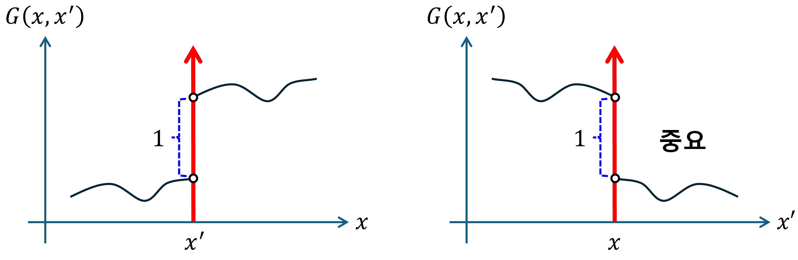

(b) First-order PDE
1. Jump condition
$$ \frac{\partial}{\partial x}G\left(x,x'\right)+q\left(x\right)G\left(x,x'\right)=\delta\left(x-x'\right), \quad q\left(x\right):\text{ continuous} $$위의 연산에 대해, 디렉 델타가 결과로 나오기 위해서는,$\partial_{x}G\left(x,x’\right)$또는 $G\left(x,x’\right)$가 디렉 델타가 되어야 한다. $G\left(x,x’\right)$이 디렉 델타 라면, $x$에 대한 미분 결과가 $\delta’$이 나오기 때문에, 이것은 디렉 델타가 될 수 없다. 따라서, $\partial_{x}G\left(x,x’\right)$는 디렉 델타가 되어야 한다.
$$ \frac{\partial}{\partial x}G\left(x,x'\right)=\delta\left(x-x'\right) $$위로부터, $x’$과 인접한 부분에서, 그린함수는 “단위 계단 함수” 임을 알 수 있다.
$$ G\left(x,x'\right)=u\left(x-x'\right) $$위 그린함수의 형태를 그려보면 다음과 같다.
ℹ️ 선형연산자 L이 1차 미분일 경우, $G\left(x,x’\right)$는 $x=x’$에서 불연속이다.
2. Solution method
$$ L=\frac{\partial}{\partial x}+q\left(x\right) $$(1) $x\ne x'$
$$ LG\left(x,x'\right)=0 $$$$ G\left(x,x'\right)= \begin{cases} c_1\left(x'\right)u_1\left(x\right), & x < x' \\ c_2\left(x'\right)u_2\left(x\right), & x > x' \end{cases} $$(2) $x=x'$
$$ LG\left(x,x')=\delta(x-x'\right) $$$$ \int_{x_{>}'}^{x_{<}'}dx\left[LG\left(x,x'\right)\right]=\int_{x_{>}'}^{x_{<}'}dx\delta\left(x-x'\right)=1 $$$$ \int_{x_{>}'}^{x_{<}'}dx\left\lbrack\frac{\partial}{\partial x}G\left(x,x'\right)+q\left(x\right)G\left(x,x'\right)\right\rbrack=1 $$$$ G\left(x_{<}',x'\right)-G\left(x_{>}',x'\right)+\int_{x_{>}'}^{x_{<}'}dx\left\lbrack q\left(x\right)G\left(x,x'\right)\right\rbrack=1 $$q(x) continuous 하다. 또한,
$$ \int_{x_{>}'}^{x_{<}'}dx\left\lbrack q\left(x\right)G\left(x,x'\right)\right\rbrack=0 $$따라서, jump condtition을 아래와 같이 구할 수 있다.
$$ G\left(x_{<}',x'\right)-G\left(x_{>}',x'\right)=1 $$example1)
해석범위는 $x\in\left\lbrack a,\infty\right)$이고, 초기값 $G\left(a,x’\right)=0$이다. $G\left(x,x’\right)$을 구하여라.
$$ \frac{\partial}{\partial x}G\left(x,x'\right)=\delta\left(x-x'\right) $$7.2: Boundary Value Green’s Functions - Mathematics LibreTexts